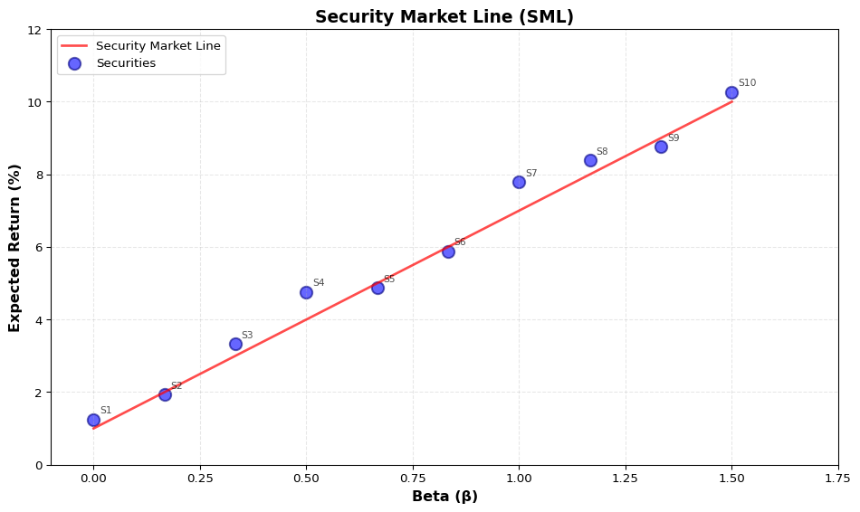

import numpy as np
import matplotlib.pyplot as plt
import pandas as pd
# Set random seed for reproducibility
np.random.seed(42)
# Define CAPM parameters
R_f = 0.01 # Risk-free rate (3%)
E_R_m = 0.07 # Expected market return (10%)
market_risk_premium = E_R_m - R_f
# Generate 10 securities with different betas
n_securities = 10
betas = np.linspace(0, 1.5, n_securities)
# Calculate expected returns based on CAPM (these will lie perfectly on SML)
expected_returns = betas * market_risk_premium + R_f
# Add small random noise to make it more realistic
noise = np.random.normal(0, 0.005, n_securities)
actual_returns = expected_returns + noise
# Create DataFrame for display
securities_df = pd.DataFrame(
{
"Security": [f"Stock {i + 1}" for i in range(n_securities)],
"Beta": betas,
"Expected Return (%)": expected_returns * 100,
"Actual Return (%)": actual_returns * 100,
}
)Lecture 5:
Cross-Sectional Asset Pricing Test: Biases and Sentiment Distorting Valuation
Charles Martineau
UTSC and Rotman | www.charlesmartineau.com
CAPM
The Capital Asset Pricing Model (CAPM) is a foundational model in finance that describes the relationship between systematic risk and expected return for stocks.
Formula: E(R_i) = R_f + \beta_i (E(R_m) - R_f)
Where:
- E(R_i): Expected return of asset (i)
- R_f: Risk-free rate
- \beta_i: Beta of asset (i) (measure of its sensitivity to market movements)
- E(R_m): Expected return of the market portfolio
- E(R_m) - R_f: Market risk premium
- \beta_i = \frac{Cov(R_i, R_m)}{Var(R_m)}
- Assumptions: Investors are rational, markets are efficient, and there are no taxes or transaction costs.
Security Market Line (SML)
The Security Market Line (SML) is a graphical representation of the CAPM. It plots the expected return of securities against their beta (systematic risk).
Key properties:
- The SML has a y-intercept equal to the risk-free rate R_f
- The slope of the SML equals the market risk premium E(R_m) - R_f
- All correctly priced assets should lie on the SML
SML: Simulated Data
SML: Simulated Data
Simulated Securities Data:
Security Beta Expected Return (%) Actual Return (%)
0 Stock 1 0.000 1.0 1.248
1 Stock 2 0.167 2.0 1.931
2 Stock 3 0.333 3.0 3.324
3 Stock 4 0.500 4.0 4.762
4 Stock 5 0.667 5.0 4.883
5 Stock 6 0.833 6.0 5.883
6 Stock 7 1.000 7.0 7.790
7 Stock 8 1.167 8.0 8.384
8 Stock 9 1.333 9.0 8.765
9 Stock 10 1.500 10.0 10.271
Risk-free rate: 1.00%
Market return: 7.00%
Market risk premium: 6.00%SML: Visualization
But Does CAPM Hold Up?
Let’s test the CAPM using real data: 10 beta-sorted portfolios from Kenneth French’s data library.
CAPM Test: French Beta Portfolios
import pandas as pd
import numpy as np
import matplotlib.pyplot as plt
import statsmodels.api as sm
# Load Fama-French factors data (contains RF and Mkt-RF)
ff_factors = pd.read_excel("data/ff_portfolios.xlsx")
ff_factors["date"] = pd.to_datetime(ff_factors["date"], format="%Y%m")
ff_factors = ff_factors.set_index("date")
# Load 10 beta-sorted portfolios
beta_portfolios = pd.read_excel("data/ff_beta_sorted_portfolios.xlsx")
beta_portfolios["date"] = pd.to_datetime(beta_portfolios["date"], format="%Y%m")
beta_portfolios = beta_portfolios.set_index("date")
# Align dates between the two datasets
common_dates = beta_portfolios.index.intersection(ff_factors.index)
beta_portfolios = beta_portfolios.loc[common_dates]
ff_factors = ff_factors.loc[common_dates]
# Get portfolio column names (excluding date if present)
portfolio_cols = [col for col in beta_portfolios.columns if col not in ["date"]]
# Calculate betas for each portfolio using OLS regression
betas = []
for col in portfolio_cols:
# Portfolio excess returns
portfolio_excess = beta_portfolios[col] - ff_factors["RF"]
market_excess = ff_factors["MKT_RF"]
# Run OLS regression: portfolio_excess = alpha + beta * market_excess
X = sm.add_constant(market_excess)
model = sm.OLS(portfolio_excess, X)
results = model.fit()
beta = results.params[1] # Beta is the slope coefficient
betas.append(beta)
# Calculate average returns for each portfolio (annualized)
avg_returns = beta_portfolios[portfolio_cols].mean() * 12
# Get risk-free rate and market return (annualized)
rf_rate = ff_factors["RF"].mean() * 12
market_return = (ff_factors["MKT_RF"].mean() + ff_factors["RF"].mean()) * 12
# Create results DataFrame
results_df = pd.DataFrame(
{
"Portfolio": [f"Beta {i + 1}" for i in range(len(portfolio_cols))],
"Beta": betas,
"Avg Return (%)": avg_returns.values,
}
)
print("Beta-Sorted Portfolios (Kenneth French Data):")
print(results_df.round(3))
print(f"\nRisk-free rate: {rf_rate:.2f}%")
print(f"Market return: {market_return:.2f}%")
print(f"Market risk premium: {(market_return - rf_rate):.2f}%")CAPM Test: Does It Hold?
CAPM Prediction vs. Actual Returns:
Portfolio | Beta | Predicted Return | Actual Return | Alpha
----------------------------------------------------------------------
Beta 1 | 0.599 | 8.65% | 10.90% | +2.24%
Beta 2 | 0.728 | 9.57% | 10.56% | +0.99%
Beta 3 | 0.848 | 10.43% | 11.79% | +1.36%
Beta 4 | 0.972 | 11.32% | 12.68% | +1.36%
Beta 5 | 1.019 | 11.65% | 12.03% | +0.38%
Beta 6 | 1.099 | 12.23% | 12.26% | +0.03%
Beta 7 | 1.175 | 12.77% | 12.26% | -0.51%
Beta 8 | 1.275 | 13.49% | 13.98% | +0.49%
Beta 9 | 1.407 | 14.44% | 14.93% | +0.49%
Beta 10 | 1.604 | 15.85% | 13.15% | -2.70%Buy-and-Hold Returns

- High-\beta stocks earn less than predicted
- Low-\beta stocks earn more than predicted
Other challenges to the CAPM
- Fama-French Three-Factor Model: Adds size and value factors to better explain returns.
- Momentum Effect: Stocks that have performed well in the past tend to continue performing well in the short term.
- Behavioral Biases: Investor psychology can lead to mispricings that CAPM does not account for.
- Liquidity Risk: Assets with lower liquidity may require higher expected returns, which CAPM does not consider.
- Empirical Anomalies: Various market anomalies (e.g., January effect, low-volatility anomaly) that CAPM cannot explain.
How to test alternative asset pricing models?
Fama-French 1993 find that size and book-to-market factors help explain the cross-section of average returns better than CAPM alone. Therefore, one should test models by including additional factors.
E(R_i) = R_f + \beta_{i,MKT} (E(R_m) - R_f) + \beta_{i,SMB} E(SMB) + \beta_{i,HML} E(HML)
Where:
- (SMB): Small Minus Big (size factor)
- (HML): High Minus Low (value factor)
Fama-French have argued that these additional factors capture systematic risks not accounted for by CAPM.
Anomalies
If you find an anomaly that contradicts CAPM, you can:
- Propose a new risk factor that explains the anomaly.
- Argue that the anomaly is due to behavioral biases or market frictions.
- Test the anomaly across different markets and time periods to assess its robustness.
- Examine whether the anomaly persists after controlling for known risk factors.
How to test these explanations empirically?
- Form a long-short portfolio based on the anomaly. E.g., for the momentum anomaly, go long past winners and short past losers.
- Regress the returns of this long-short portfolio on the factors of the asset pricing model being tested.
- If the alpha (intercept) is statistically significant, it suggests that the anomaly is not fully explained by the model.
Testing an Anomaly: An Example
Fang and Peress (2009) find that stocks with high media coverage earn lower returns.
- Form a long-short portfolio: Long low media coverage stocks, short high media coverage stocks.

What can you conclude from this regression / findings?
Your “alpha” is it risk or mispricing?
RISK-BASED:
- ✓ Does it covary with bad economic states?
- ✓ Is it persistent across time/markets?
- ✓ Does it capture systematic covariation?
- ✓ Can you identify the economic risk?
MISPRICING-BASED:
- ✓ Is there a behavioral bias that explains it?
- ✓ Are there limits to arbitrage?
- ✓ Does it vary with sentiment/attention?
- ✓ Is there evidence of correction over time?
Zoo of Anomalies / Factors
Campbell R. Harvey, Yan Liu, and Heqing Zhu (2016) “…there are now more than 300 documented anomalies in the asset pricing literature.”
- Is it too easy to find anomalies?
- Data mining concerns
- Publication bias
- P-hacking
- Multiple testing problem
- Lack of out-of-sample validation
- Economic significance vs. statistical significance
- Robustness across different markets and time periods
- Theoretical justification for the anomaly
- Practical implementability (transaction costs, liquidity)
- Survivorship bias in datasets
Joint Hypothesis Problem
Fama (1970) argued that “tests of the efficiency of markets are joint tests of the efficiency hypothesis and of a particular asset-pricing model.”
Implication: Rejection of an asset pricing model does not necessarily imply market inefficiency; it could also indicate that the model is misspecified.
Is the CAPM really dead?
Hasler and Martineau (2022) find that the conditional CAPM holds up well when accounting for time-varying betas and risk premia.

MGFD40